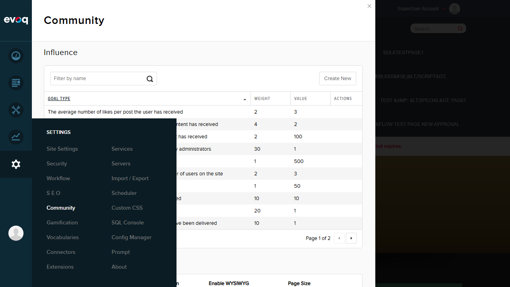
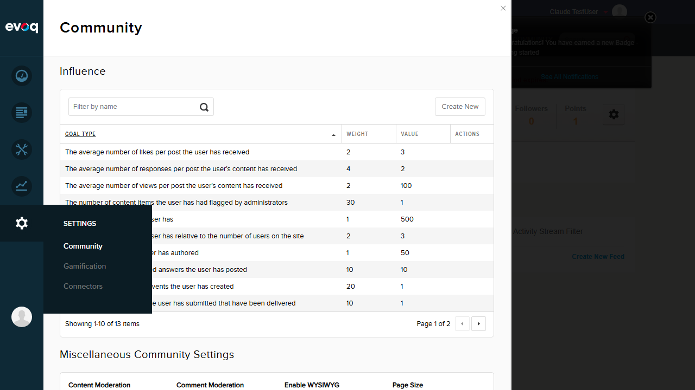
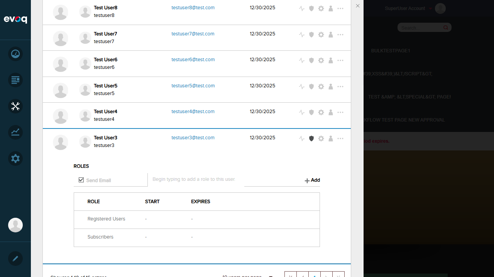
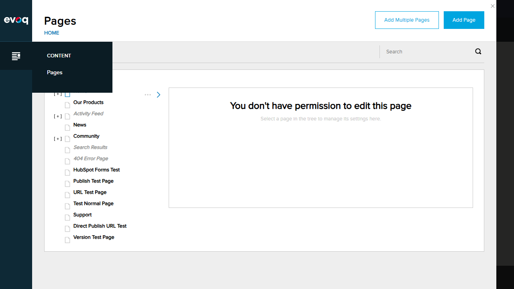
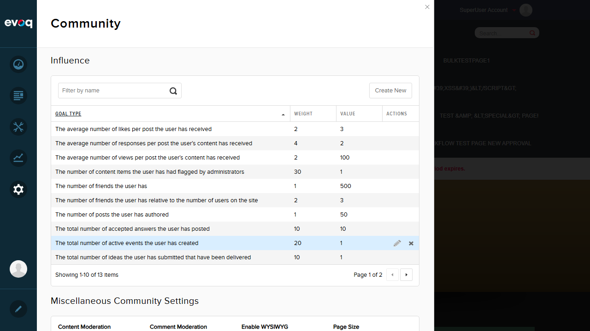
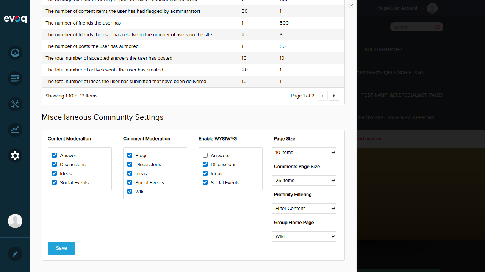
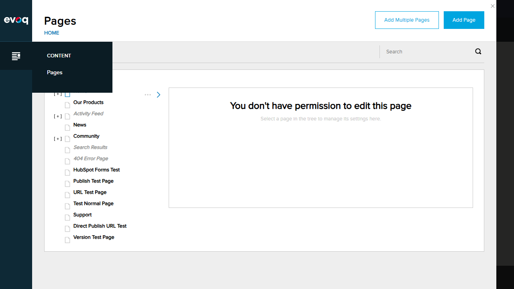
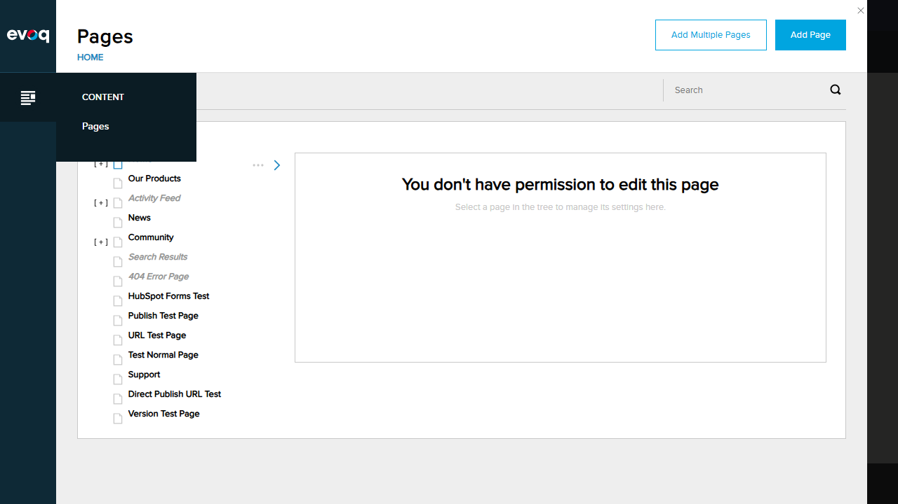

Description: Verify that users with Administrator role can access the Community Settings module.
Steps:
Log in as host (SuperUser/Administrator)
Navigate to PersonaBar > Settings
Click on Community
Verify the Community Settings page loads with all settings visible
Result: Administrator successfully accessed Community Settings with full visibility of Influence goals and Miscellaneous Community Settings.

Test 2: Access module with Community Manager role
Status:PASS
Description: Verify that users with Community Manager role can access the Community Settings module.
Steps:
Create test user "claudetest" and add Community Manager role
Log out and log in as claudetest
Navigate to PersonaBar > Settings
Click on Community
Verify the Community Settings page loads with all settings visible
Result: Community Manager user successfully accessed Community Settings with full visibility.

Test 3: Deny access for users without MenuPermission
Status:PASS
Description: Verify that users without Administrator or Community Manager role cannot access the Community Settings module.
Steps:
Verify testuser3 only has "Registered Users" and "Subscribers" roles
Log out and log in as testuser3
Check PersonaBar menu options
Verify Settings menu is not visible
Result: Regular user (testuser3) could only see "Content" and "Edit" menus in PersonaBar. The Settings menu was completely hidden, preventing access to Community Settings.


Test 4: Verify LicenseCheck for valid Evoq license
Status:PASS
Description: Verify that the module requires a valid Evoq license to function.
Steps:
Log in as administrator
Navigate to Settings > Community
Verify the page loads successfully with valid trial license
Result: The Community Settings module loaded successfully. The system shows "You are using a trial version of Evoq Engage. You currently have 20 days remaining before your trial period expires." confirming the LicenseCheck attribute is validating the license.

Test 5: Verify portal isolation (settings per portal)
Status:PASS
Description: Verify that settings are stored per portal using PortalSettings.PortalId.
Verify settings are retrieved and saved using portal-specific ID
Result: Code review confirms portal isolation is implemented. The GetSettings and SaveSettings methods use PortalSettings.PortalId to ensure settings are stored and retrieved per portal. Single portal environment limits cross-portal testing.
public HttpResponseMessage GetSettings()
{
var response = new {
Success = true,
Setting = CmxSettingsController.Instance.GetCmxSettings(PortalSettings.PortalId)
};
return Request.CreateResponse(HttpStatusCode.OK, response);
}
Test 6: Verify anti-forgery token on POST operations
Status:PASS
Description: Verify that POST operations require a valid anti-forgery token.
Steps:
Navigate to Community Settings
Change Page Size from "5 items" to "10 items"
Click Save button
Verify save succeeds (which confirms anti-forgery token was valid)
Result: The save operation succeeded with message "Item successfully saved." The [ValidateAntiForgeryToken] attribute on SaveSettings would reject requests without a valid token, so successful save confirms proper token handling.

Observations
Invalid/Expired License Testing: Could not test access denial with invalid or expired Evoq license as the test environment has a valid 20-day trial license. The [LicenseCheck] attribute is present in the code.
Cross-Portal Access Prevention: Could not fully test cross-portal access prevention as only one portal is available in the test environment. Code uses PortalSettings.PortalId for all data operations, ensuring portal isolation at the code level.
Role-Based Access Control: The defaultPermissions in the .dnn manifest correctly limits access to "Administrators,Community Manager" roles only.
CSRF Protection: All POST methods (SaveSettings, SaveInfluenceGoal, DeleteInfluenceGoal) have [ValidateAntiForgeryToken] attribute for protection against cross-site request forgery attacks.
 
